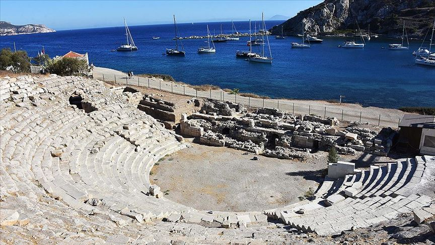
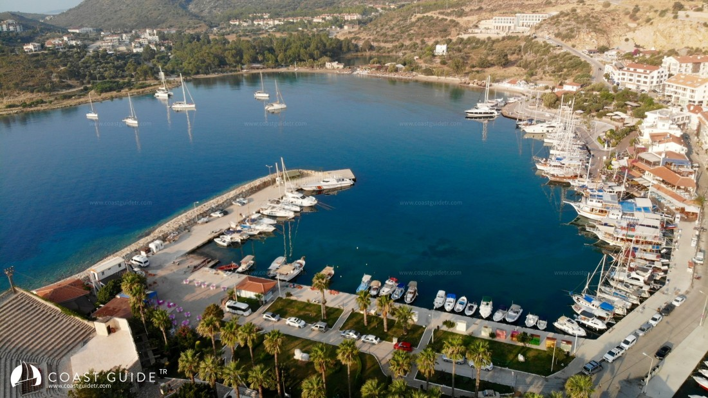
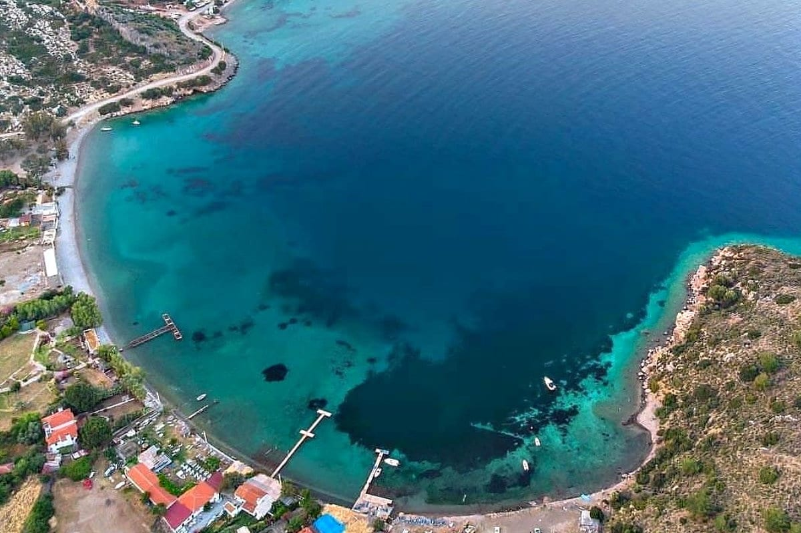

Datça,Muğla
Datça, Türkiye'nin Muğla ilinde bir ilçedir.
DATÇA GEZİLECEK YERLER
Knidos Antik Kenti

Datça Yarımadası’nın batı ucunda konumlanan Knidos Antik Kenti, merkeze yaklaşık 35 kilometre uzaklıktadır.
Tarihe tanıklık eden antik kente ulaşımlar özel araç, taksi veya Yazı dolmuşlarıyla yapılabilmektedir.
M.Ö. 4. yüzyılda inşa edilen antik kent, bölgede 1858 yılında gerçekleştirilen arkeoloji çalışmaları esnasında keşfedilmiştir.
Burada gün yüzüne çıkarılan birçok değerli eser, sergilenmek üzere Londra’ya götürülmüştür.
Kurulduğu dönemde, bölgenin ticaret, sanat ve kültür alanında zengin kentlerinden olan Knidos’da matematik ve fizik alanında da çok önemli çalışmalar yapıldığı tespit edilmiştir.
Bunun yanı sıra astrolojiyle ilgili de kalıcı çalışmaların yapıldığı bilinen kent içerisinde görülebilecek pek çok tarihi yapı da bulunmaktadır.
Datça Limanı

Datça Limanı, Datça Körfezi içinde, üzerinde fener bulunan Uzunca Ada’nın batısında bulunmaktadır.
Datça önlerinde doğuya doğru bir yarımada uzanır.
Bu yarımadanın kuzey ve güneyinde iki liman vardır.
Kuzey limanı; sahili kumsal olan, sığ bir limandır.
Liman ortalarında 5-6 metrelere kadar demir atılıp, alargada kalınabilir.
Havasından dolayı kuzey limanı pek tercih edilmez ancak havanın güzel olduğuna eminseniz kıyıdan biraz uzakta alargada kalabilirsiniz.
Esas liman, uzun bir rıhtımı bulunan güney limanıdır.
Limanın ortalarında bir mendirek ve mendireğin içinde sahil güvenlik bulunmaktadır.
Bu alanda su sığlaştığı için burada küçük tekneler bulunur.
Hemen yan tarafında da uzun rıhtım, iskele devam eder.
Demir atacağınız zemin kum ve erişte karışımı olduğu için demirde kalacaksanız demirinizin tuttuğundan emin olmanız sizin için iyi olacaktır.
Liman güneyli havalara açıktır, kuzeyli havalar için korunaklı olsa da mevsim geçişlerinde zaman zaman sağanaklara ev sahipliği yapabilir.
Kargı Koyu

Datça merkezine 3 km uzaklıktaki Kargı Koyu Datça’nın Cennet koylarından.
Etrafı dağlarla çevrili Kargı’nın kuzey rüzgarlarına kapalı olması rüzgarlı havalarda denizin sakin ve daha ılık olmasının sağlıyor..
Kargı Koyu’nun ziyaretçilerinin çok olmasında merkeze yakınlığının ve doğal güzelliğinin de rolü var, yürüyerek yarım saatlik bir mesafede.
Belediye denetimli minübüsler sıkça gelip, gidiyor.
Bu sayfamda Kargı koyunun Kuzeydoğu’sundan başlayacağım gezi ile turistik özelliklerini tanıtacağım, yazları kalabalık olan koy kışları da bir o kadar sakin, doğa yürüyüşleri için birçok parkurun başlama ve bitim noktası.
Yaz sabahları erken saatlerde yürüyüş yapanların da sevdiği bir parkur, güneşin doğuşunu burada karşılamak unutamayacağınız bir zaman demek oluyor.